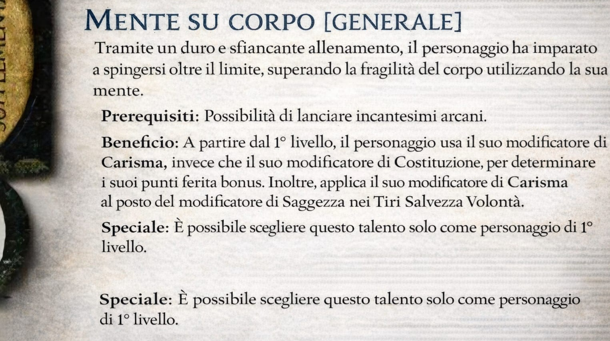

Talento: Mente su Corpo
Uno dei talenti più discussi tra i giocatori di D&D 3.5 in Italia, "Mente su Corpo" consente a chi lancia incantesimi arcani di usare il proprio Carisma per calcolare i punti ferita bonus e i tiri salvezza su Volontà, invece della Costituzione o Saggezza.
Discussione tra giocatori
- Magus89: Qualcuno sa da quale manuale è tratto questo talento? L'ho trovato in giro ma non ne trovo traccia nei manuali ufficiali.
- Sibylla: Anche io l’ho visto, sembra una variante regionale o qualcosa di homebrew tradotto.
- VecchioMago: C’è chi dice venga da Dragon Magazine o da qualche supplemento non tradotto in italiano. Chi ne sa di più?
- Fireballer: Io lo uso sempre nei miei personaggi carismatici. Lo trovo molto efficace per i maghi!
- LunaElfica: Concordo, offre un’interessante alternativa strategica, soprattutto nelle prime fasi.
- CompendiumMaster: In realtà esistono tre versioni con lo stesso nome, "Mente su Corpo", ma con descrizioni e effetti leggermente diversi. Attenzione: non vuol dire che una sia più corretta di un'altra, è solo che avendo lo stesso nome si può fare molta confusione dato che ci sono tanti manuali.